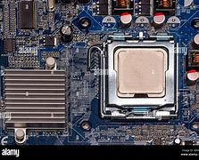
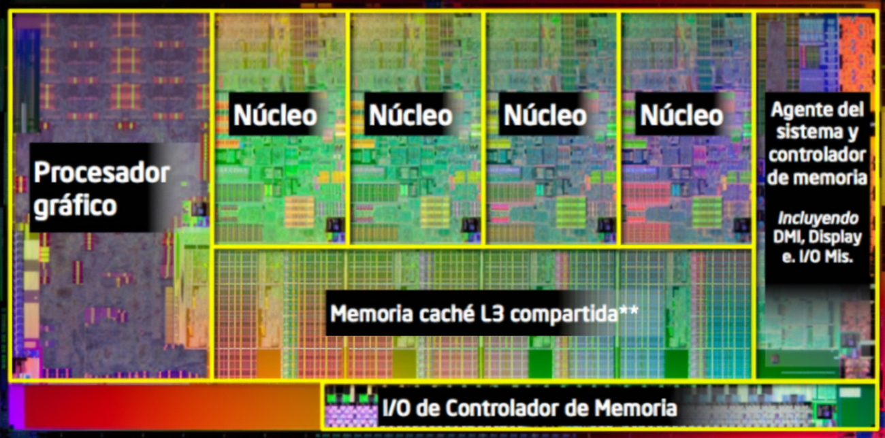
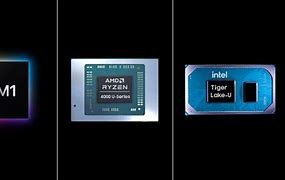

1. Unidad Central de Procesamiento (CPU)
La **Unidad Central de Procesamiento (CPU)** es el corazón de cualquier sistema informático. Es responsable de ejecutar las instrucciones de los programas mediante el procesamiento de datos. Actúa como el cerebro de la computadora, tomando decisiones y controlando el flujo de información entre diferentes partes del sistema. Sin la CPU, el sistema no podría funcionar de manera eficiente. La CPU toma las instrucciones de los programas almacenados en la memoria, las decodifica y las ejecuta, lo que permite que el sistema realice tareas específicas.
Las CPU modernas han evolucionado para realizar tareas complejas y ofrecer un rendimiento más rápido, impulsando la innovación en aplicaciones móviles, computadoras personales y servidores. La capacidad de procesamiento de una CPU depende de varios factores, como la cantidad de núcleos, la frecuencia de reloj, la arquitectura interna y el tamaño de la caché.
Fuente: Intel - Processor Architecture
2. Arquitectura de la CPU
La **arquitectura de la CPU** se refiere a la forma en que la CPU está organizada internamente y cómo interactúan sus componentes. La arquitectura afecta directamente al rendimiento de la CPU y a la capacidad de la computadora para ejecutar tareas de manera eficiente. Algunos de los aspectos clave en la arquitectura de la CPU incluyen:
- **Núcleos:** Los núcleos son las unidades de procesamiento dentro de la CPU. Una CPU puede tener uno o varios núcleos. Un procesador de múltiples núcleos permite que la computadora ejecute varios procesos a la vez, lo que mejora el rendimiento general del sistema, especialmente en aplicaciones que requieren multitarea.
- **Hilos:** Los hilos son las unidades de ejecución dentro de cada núcleo. Algunas CPU utilizan tecnología como **Hyper-Threading** de Intel, que permite a un solo núcleo manejar dos hilos de ejecución simultáneamente, lo que mejora el rendimiento en aplicaciones que pueden aprovechar múltiples hilos.
- **Frecuencia de Reloj:** La frecuencia de reloj, medida en gigahercios (GHz), indica cuántas operaciones puede realizar la CPU por segundo. Una mayor frecuencia de reloj generalmente implica un mejor rendimiento, pero esto también depende de la eficiencia de la arquitectura de la CPU.
- **Caché:** La memoria caché es una memoria extremadamente rápida que se encuentra dentro de la CPU. Almacena datos e instrucciones que la CPU necesita con frecuencia, lo que reduce los tiempos de acceso a la memoria principal y mejora el rendimiento.
Fuente: HowToGeek - How to Understand Processor Speeds and Core Counts
3. Marcas y Modelos Populares
Las principales marcas de procesadores en el mercado son **Intel**, **AMD** y **Apple**. Cada una de estas marcas ofrece una gama de procesadores con diferentes características que están diseñadas para satisfacer las necesidades de diferentes tipos de usuarios. A continuación, se describen algunas de las líneas más populares:
- **Intel:** Los procesadores **Intel Core** (i3, i5, i7, i9) están diseñados para ofrecer un rendimiento balanceado para tareas que van desde la navegación web y las aplicaciones de oficina hasta el gaming y la edición de video. Los modelos i7 e i9 ofrecen el máximo rendimiento para tareas que requieren mucho poder de procesamiento.
- **AMD:** Los procesadores **Ryzen** de AMD han ganado popularidad por su excelente relación calidad-precio y rendimiento en multitarea. La serie Ryzen 7 y Ryzen 9 son ideales para tareas como gaming y edición de video, mientras que la serie Ryzen 5 se adapta bien a la mayoría de las necesidades de los usuarios generales.
- **Apple:** Los **procesadores M1 y M2** de Apple, utilizados en sus productos como MacBook y iMac, han marcado una gran diferencia en términos de eficiencia energética y rendimiento. Estos procesadores están basados en la arquitectura ARM y han sido diseñados específicamente para optimizar el ecosistema de Apple, lo que mejora la integración entre hardware y software.
Fuente: Tom's Hardware - AMD vs Intel: Which Processor Should You Buy?
 4. Procesadores para Diferentes Usos
Los procesadores no son una talla única. Dependiendo de las necesidades del usuario, se utilizan diferentes tipos de procesadores. A continuación, se presentan algunos ejemplos según el uso:
- **Para juegos:** Se necesitan procesadores con múltiples núcleos y frecuencias altas, como los **Intel i7/i9** o **AMD Ryzen 7/9**, que pueden manejar gráficos intensivos y grandes cargas de trabajo sin disminuir el rendimiento.
- **Para edición de video:** Los procesadores como el **Intel Core i9** o **AMD Ryzen 9** con múltiples núcleos son esenciales para la renderización rápida de video, especialmente en aplicaciones de edición profesional como Adobe Premiere Pro o DaVinci Resolve.
- **Para servidores:** Los procesadores **Intel Xeon** y **AMD EPYC** están diseñados para manejar grandes volúmenes de datos y múltiples usuarios simultáneos, lo que los convierte en la opción ideal para servidores empresariales.
- **Para tareas generales:** Los procesadores de gama baja como el **Intel Core i3** o **AMD Ryzen 3** son suficientes para tareas cotidianas, como navegar por internet, ver videos y trabajar con aplicaciones de oficina.
Fuente: BBC News - Which Processor Should You Choose?
5. Tendencias y Nuevas Tecnologías
Las tecnologías emergentes están impulsando avances en la arquitectura de los procesadores. Algunas de las tendencias actuales incluyen:
- **Procesadores Multicore:** La tendencia hacia los **procesadores multicore** sigue en aumento. Con múltiples núcleos, los procesadores pueden manejar más tareas al mismo tiempo, mejorando el rendimiento en juegos, aplicaciones de productividad y software de edición de video.
- **Chips especializados:** Existen chips especializados para tareas como **inteligencia artificial (IA)**, **aprendizaje automático**, y procesamiento de imágenes, como las **TPUs** de Google y las **GPU** de Nvidia. Estos chips están diseñados específicamente para acelerar estas tareas complejas.
- **Rendimiento y Eficiencia Energética:** Las arquitecturas más avanzadas, como los **procesadores de 5nm** (por ejemplo, los chips de Apple M1), permiten un rendimiento más alto mientras consumen menos energía, lo que es crucial para dispositivos móviles y laptops con una duración de batería prolongada.
Fuente: CNET - The Future of Processors: What You Need to Know